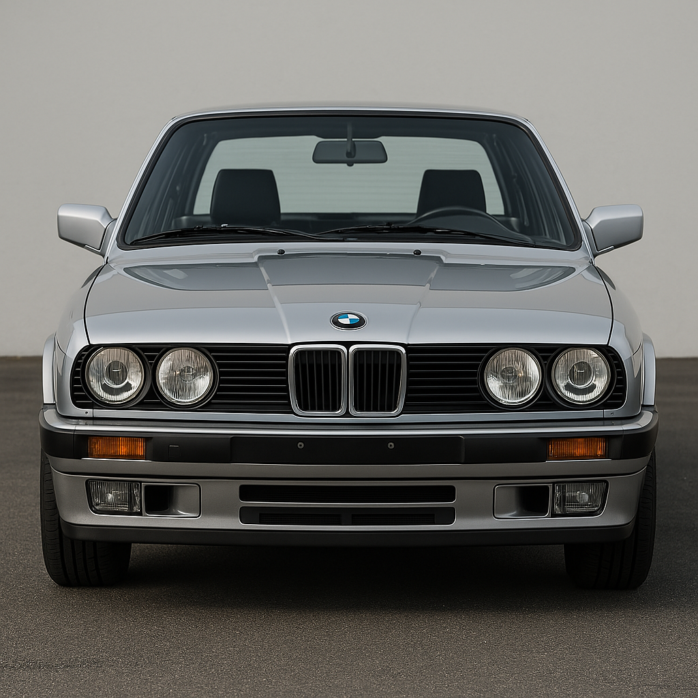
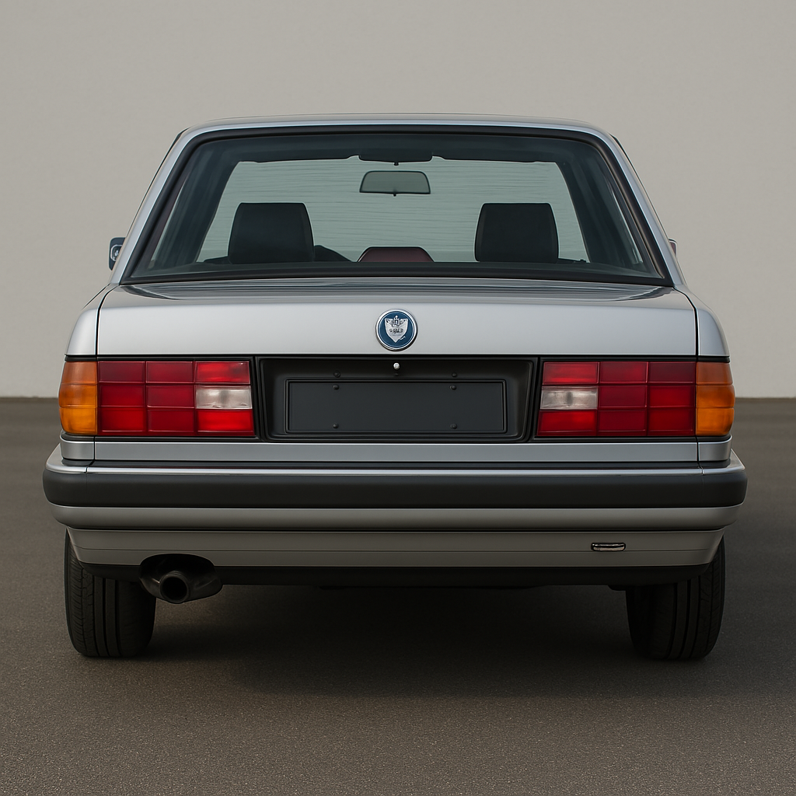

El BMW E30 es la segunda generación de la Serie 3, producida entre 1982 y 1994. Es uno de los modelos más icónicos de la marca alemana, reconocido por su diseño atemporal, calidad de construcción y excelente dinámica de conducción.
El E30 se destacó por su tracción trasera, su equilibrado reparto de pesos y una conducción precisa. Su fiabilidad y facilidad de modificación han hecho que siga siendo muy popular entre los entusiastas del automovilismo.
Uno de los hitos más importantes fue el lanzamiento del BMW M3 E30 en 1986, un modelo de alto rendimiento desarrollado para homologar el auto en el campeonato de turismos. Con su motor S14 de 4 cilindros, el M3 se convirtió en un referente en los deportivos compactos.
El diseño exterior del BMW E30 es clásico y atemporal, con líneas limpias y proporciones equilibradas. Presenta una carrocería compacta y deportiva, con el característico frontal de doble riñón, faros redondos dobles y una silueta bien definida. Su forma cuadrada, típica de los años 80, le da un aspecto robusto pero elegante. Dependiendo de la versión, podía llevar detalles deportivos como spoilers, faldones y llantas específicas. A pesar de su edad, su diseño sigue siendo muy apreciado por su sencillez y personalidad.


Interior:
El diseño interior del BMW E30 refleja la filosofía de funcionalidad y ergonomía típica de BMW en los años 80. El habitáculo es sencillo pero bien construido, con materiales de buena calidad para su época.
El tablero de instrumentos está orientado ligeramente hacia el conductor, lo que facilita el acceso a los controles. Los relojes analógicos son claros y fáciles de leer. Los asientos ofrecen buen soporte, especialmente en las versiones deportivas, y había opciones en tela, cuero o vinilo.
A pesar de su tamaño compacto, el interior es cómodo para cuatro pasajeros, con un maletero razonablemente amplio. Las versiones más equipadas podían incluir techo solar, aire acondicionado, elevalunas eléctricos y radio con cassette o computadora de a bordo, lo cual era avanzado para su época.